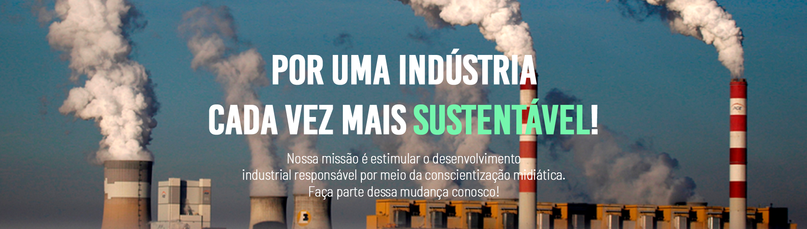

.png)
.png)

A liberação de gases de efeito estufa na atmosfera, especialmente o dióxido de carbono (CO2) retém parte
da radiação solar que atinge nosso planeta, contribuindo para o aquecimento global.
Embora seja um processo natural, a intensificação das emissões de carbono devido às atividades humanas
acaba elevando consideravelmente a temperatura do planeta, desencadeando o aquecimento global.
Entre as principais causas da emissão de carbono estão a queima de combustíveis fósseis e os processos
industriais, como produção de cimento e aço e refinamento de petróleo, por exemplo. Estes, são responsáveis
por uma parcela bastante significativa da emissão de CO2 no Brasil, totalizando cerca de xx% (Ministério
da Ciência, Tecnologia e Inovações, 2022).
Além disso, a emissão de CO2 na atmosfera gera inúmeros impactos, tais como: Grandes mudanças climáticas, contaminação
atmosférica, chuvas ácidas, desregulação do efeito estufa, elevação da temperatura dos oceanos, acidificação, aumento
da temperatura global, aumento da gravidade das calamidades ambientais, além do desaparecimento de espécies.

Os principais setores responsáveis pela emissão de dióxido de carbono, são: o setor de Energia,
IPPU (referente aos processos industriais e uso de produtos), Agropecuária, LULUCF (Uso da terra e
silvicultura) e o setor de Resíduos.
O setor industrial, em específico, corresponde à 34% de toda a emissão brasileira de dióxido de carbono,
totalizando, em 2020, 102.221.360 toneladas de CO2eq.
Dentro do setor industrial, as indústrias que mais consomem, são a indústria metalúrgica (52,1%) e a produção
de cimento (22,7%). Desde 1990, cada setor cresceu aproximadamente em 8,8%.
A preocupação com a sustentabilidade tem sido um grande assunto em pauta nos últimos tempos.
Dessa forma as empresas procuraram maneiras de reduzir essa emissão de gás carbono em suas
atividades.
A emissão do gás pode ser diminuída através do uso de energias limpas e
renováveis, modernização dos parques industriais (para melhor rendimento e menor consumo de
energia), processamentos sustentáveis, entre outros.
Algumas tecnologias já utilizadas na captura de carbono e redução da emissão desse gás, são:
* Uso de energias limpas e renováveis;
* Modernização dos parques industriais;
* Processamentos sustentáveis;
* Substituições em todos os processos (compensar todo o CO2 emitido);
* Captação e tratamento do carbono provindo das chaminés - Fotobiorreator;
* Análise das emissões de GEE (diretas ou indiretas).
A Indústria Verde é um conceito referente à gestão de fábricas baseada na sustentabilidade,
trabalhando contra os impactos negativos ao meio ambiente.
Assim, desenvolve soluções para a empresa que
beneficie e priorize o meio ambiente. Dessa forma,
o desenvolvimento econômico e preocupação ambiental andam lado a lado.
* Novas oportunidades de negócios e desenvolvimento industrial;
* Crescimento no mercado (reputação positiva);
* Aumento de investidores;
* Diminuição dos impactos da indústria no meio ambiente;
* Redução de desperdícios e de custos (água, papel, energia elétrica);
* Aumento de incentivos fiscais do próprio governo;
* Aumento de engajamento entre os colaboradores.
Também chamados de selos verdes, os selos ambientais são certificações de que produtos e empresas
possuem um comprometimento com o meio ambiental,
e que produzem de forma sustentável, ou seja, com ações de menor impacto ambiental e socialmente
responsáveis.
Ademais, os selos verdes podem ser vistos como um diferencial e um atrativo para a empresa, uma vez que é
é fator decisivo e orienta consumidores na compra, pois evidencia que a marca em questão é preocupada com
questões ambientais, agregando credibilidade à marca.
E, por outro lado, pode alavancar o acesso a novos mercados que valorizam as políticas institucionais voltadas à
descarbonização e exigem selos ambientais.
Atualmente, existem inúmeros selos ambientais muito relevantes na área de sustentabilidade, porém um muito
pertinente à questão industrial é o selo Carbon Free, que expõe que o produto/serviço está compromissado com
a neutralização das suas emissões. Dessa forma, o selo causa um impacto positivo nos clientes.